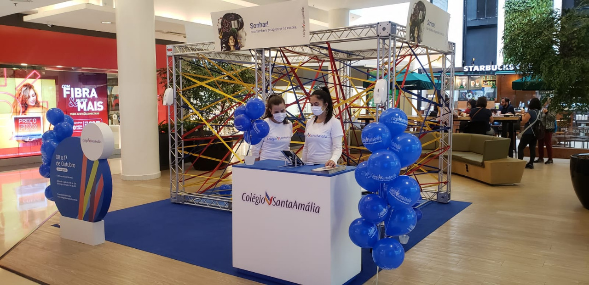

Vida no campus
Salão da escola
A escola foi fundada em 1932
O Colégio Santa Amália oferece toda a estrutura necessária para o conforto e desenvolvimento educacional dos seus alunos, como por exemplo: Banda Larga, Parque Infantil, Refeitório, Biblioteca, Quadra Esportiva, Quadra Esportiva Coberta, Laboratório de Ciência, Laboratório de Informática, Sala de Leitura, Auditório, Pátio Coberto, Pátio Descoberto, Sala do Professor e Internet.

Biblioteca da escola
foi fundada em 1980
Veja abaixo como foi o desempenho do Colégio Santa Amália no ENEM 2019, comparado ao desempenho das demais escolas da cidade e do Brasil: Média geral da escola no ENEM: 619.77
Auditório da escola
Foi fundado 1982
É era um lugar historico mas infelizmente mudou e continuou sendo uma escola
Conquistas da escola
Ela promoveu ativação no dia das crianças

Foi um evento
Foi um evento sobre as crianças e etc